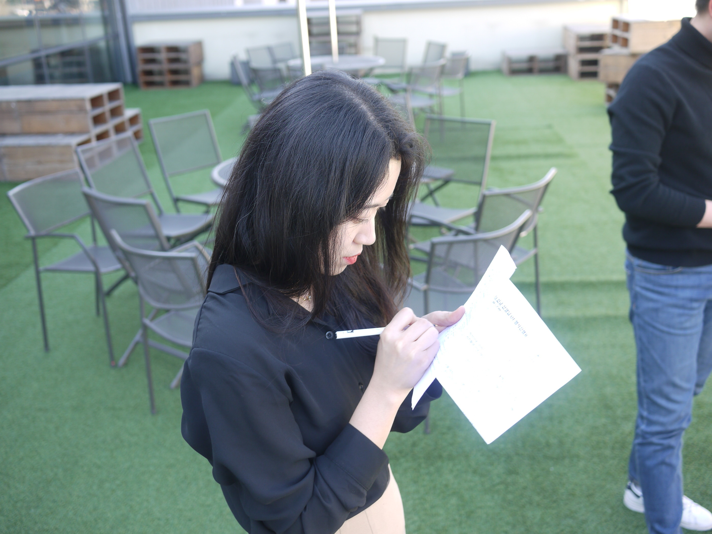

기발한 아이디어를 좋아하고 세상이 너무 궁금한 저에게 마케팅은 언제나 즐거운 도전입니다.
광고가 좋아 뉴욕으로 떠났고, 국내 최대의 외국인 관광객용 여행 플랫폼을 만드는 게 즐거웠습니다.
지금은 부모와 선생님이 함께 성장할 수 있는 아이돌봄서비스 자란다를 널리 알리는 일에 도전하고 있습니다.
2015.07 성균관대학교 신문방송학과/중어중문학과 졸업
2013.08 미국 뉴욕 소재 비영리단체 AWIB | 마케터
2015.04 SK Planet | 인턴 AE
2015.09 제일기획 펑타이 | 신규사업 마케터
2018.07 아이돌봄서비스 자란다 | 퍼포먼스 마케터
인간이 만들어낸 역사와 문화, 기술과 사회 전반에 관심이 많습니다.
요즘은 넷플릭스로 고전 명화를 찾아보고, 유튜브로 해설과 시대상을 더 알아보는 것을 좋아합니다.
어떤 콘텐츠건 가슴을 울린다면 멈춰서서 뛰어난 생각의 원천을 궁리하고 이야기합니다.
사람들이 어떻게 사는지 궁금할 땐 다른 사람의 글과 창작물을 보며 짐작하길 좋아합니다.
(요즘 빠져있는 조승연 작가의 탐구생활입니다.)